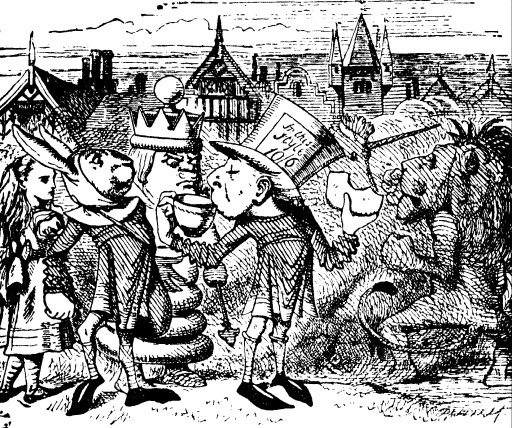
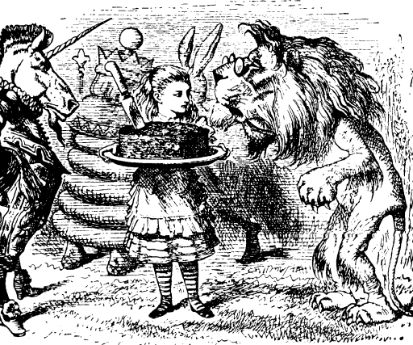
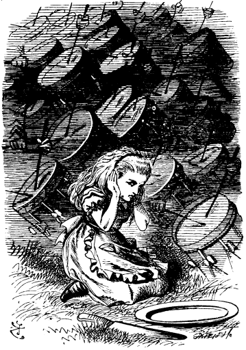
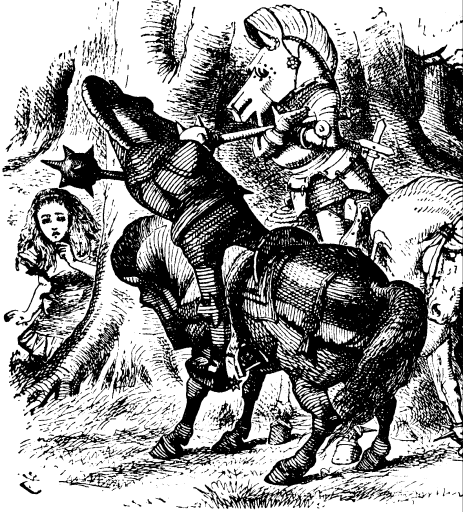
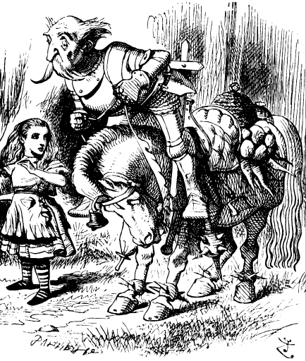

AFTER a while the noise seemed gradually to die away, till all was dead silence, and Alice lifted up her head in some alarm. There was no one to be seen, and her first thought was that she must have been dreaming about the Lion and the Unicorn and those queer Anglo-Saxon Messengers, however, there was the great dish still lying at her feet, on which she had tried to cut the plum-cake' "So I wasn't dreaming, after all." she said to herself, "unless--unless we're all part of the same dream. Only I do hope it's my dream and not the Red King's! I don't like belonging to another person's dream," she went on in a rather complaining tone: "I've a great mind to go and wake him, and see what happens!"
At this moment her thoughts were interrupted by a loud shouting of "Ahoy! Ahoy! Check!" and a Knight, dressed in crimson armour, came galloping down upon her, brandishing a great club. just as he reached her, the horse stopped suddenly: "You're my prisoner!" the Knight cried, as he tumbled off his horse.
Startled as she was, Alice was more frightened for him than for herself at the moment, and watched 'him with some anxiety as he mounted again. As soon as he was comfortably in the saddle, he began once more, "You're my---" but here another voice broke in, "Ahoy! Ahoy! Check!" and Alice looked round in some surprise for the new enemy.
This time it was a White Knight. He drew up at Alice's side, and tumbled off his horse just as the Red Knight had done: then he got on again, and the two Knights sat and looked at each other without speaking. Alice looked from one to the other in some bewilderment.
"She's my prisoner, you know!" the Red Knight said at last.
"Yes, but then I came and rescued her!" the White Knight replied.
"Well, we must fight for her, then," said the Red Knight, as he took up his helmet (which hung from the saddle, and was something the shape of a horse's head), and put it on.
"You will observe the Rules of Battle, of course?" the White Knight remarked, putting on his helmet too.
"I always do," said the Red Knight, and they began banging away at each other with such fury that Alice got behind a tree to be out of the way of the blows.
"I wonder, now, what the Rules of Battle are," she said to herself, as she watched the fight, timidly peeping out from her hiding-place: "one Rule seems to be that, if one Knight hits the other, he knocks him off his horse, and if he misses, he tumbles off-himself--and another Rule seems to be that they hold their clubs in their arms, as if they were Punch and Judy. What a noise they make when they tumble! Just like fire-irons falling into the fender! And how quiet the horses are! They let them get on and off them just as if they were tables!"

Another Rule of Battle, that Alice had not noticed, seemed to be that they always fell on theheads, and the battle ended with their both falling off in this way, side by side: when they got up again, they shook hands, and then the Red Knight mounted and galloped off.
"It was a glorious victory, wasn't it?" said the White Knight, as he came up panting.
"I don't know," Alice said doubtfully. "I don't want to be anybody's prisoner. I want to be Queen."
"So you will, when you've crossed the next brook," said the White Knight. "I'll see you safe to the end of the wood--and then I must go back, you know. That's the end of my move."
"Thank you very much," said Alice. "May I help you off with your helmet?" It was evidently more than he could manage by himself; however she managed to shake him out of it at last.
"Now one can breathe more easily," said the Knight, putting back his shaggy hair with both hands, and turning nis gentle face and large mild eyes to Alice. She thought she had never seen such a strange-looking soldier in all her life.
He was dressed in tin armour, which seemed to fit him very badly, and he had a queer little deal box fastened across his shoulders upside-down, and with the lid hanging open. Alice looked at it with great curiosity.
"I see you're admiring my little box," the Knight said in a friendly tone. "It's my own invention--to keep clothes and sandwiches in. You see I carry it upside-down, so that the rain can't get in."
"But the things can get out," Alice gently remarked. "Do you know the lid's open?"
"I didn't know it," the Knight said, a shade of vexation passing over his face. "Then all the things must have fallen out! And the box is no use without them." He unfastened it as he spoke, and was just going to throw it into the bushes, when a sudden thought seemed to strike, and he hung it carefully on a tree. "Can you guess why I did that!" he said to Alice.
Alice shook her head. "In hopes some bees may make a nest in it--then I should get the honey."
"But you've got a bee-hive--or something like one--fastened to the saddle," said Alice.
"Yes, it's a very good bee-hive," the Knight said in a discontented tone, "one of the best kind. But not a single bee has come near it yet. And the other thing is a mouse-trap. I suppose the mice keep the bees out--or the bees keep the mice out, I don't know which."
"I was wondering what the mouse-trap was for" said Alice. "It isn't very likely there would be any mice on the horse's back."
"Not very likely, perhaps," said the Knight; "but if they do come, I don't choose to have them running all about."
"You see," he went on after a pause, "it's as well to be provided for everything. That's the reason the horse has anklets round his feet."
"But what are they for?" Alice asked in a tone of great curiosity.
"To guard against the bites of sharks," the Knight replied. "It's an invention of my own. And now help me on. I'll go with you to the end of the wood--what's that dish for?"
"It's meant for plum-cake," said Alice.
"We'd better take it with us," the Knight said. "It'll come in handy if we find any plum-cake. Help me to get it into this bag."
This took a long time to manage, though Alice held the bag open very carefully, because the Knight was so very awkward in putting in the dish: the first two or three times that he tried he fell in himself instead. "It's rather a tight fit, you see," he said, as they got it in at last; "there are so many candlesticks in the bag." And he hung it to the saddle, which was already loaded with bunches of carrots, and fire-irons, and many other things.
"I hope you've got you hair well fastened on?" he continued, as they set off.
"Only in the usual way," Alice said, smiling.
"That's hardly enough," he said, anxiously. "You see the wind is so very strong here. It's as strong as soup."
"Have you invented a plan for keeping one's hair from being blown off?" Alice enquired.
"Not yet," said the Knight. "But I've got a plan for keeping it from falling off."
"I should like to hear it very much."
"First you take an upright stick," said the Knight. "Then you make your hair creep up it, Like a fruit-tree. Now the reason hair falls off is because it hangs down--things never fall upwards, you know. It's my own invention. You may try it if you like."
It didn't sound a comfortable plan, Alice thought, and for a few minutes she walked on in silence, puzzling over the idea, and every now and then stopping to help the poor Knight, who certainly was not a good rider.
Whenever the horse stopped (which it did very often), he fell off in front; and whenever it went on again (which it generally did rather suddenly), he fell off behind. Otherwise he kept on pretty well, except that he had a habit of now and then falling off sideways; and as he generally did this on the side on which Alice was walking, she soon found that it was the best plan not to walk quite close to the horse.
"I'm afraid you've not had much practice in riding," she ventured to say, as she was helping him up from his fifth tumble.
The Knight looked very much surprised, and a little offended at the remark. "What makes you say that?" he asked, as he scrambled back into the saddle, keeping hold of Alice's hair with one hand, to save himself from falling over on the other side

"Because people don't fall off quite so often, when they've had much practice."
"I've had plenty of practice," the Knight said very gravely: "plenty of practice!"
Alice could think of nothing better to say than "Indeed?" but she said it as heartily as she could They went on a little way in silence after this, the Knight with his eyes shut, muttering to himself, and Alice watching anxiously for the next tumble.
"The great art of riding," the Knight suddenly began in a loud voice, waving his right arm as he spoke "is to keep---" Here the sentence ended as suddenly as it had begun, as the Knight fell heavily on the top of his head exactly in the path where Alice was walking. She was quite frightened this time, and said in an anxious tone, as she picked him up, "I hope no bones are broken?"
"None to speak of," the Knight said, as if he didn't mind breaking two or three of them. "The great art of riding as I was sayin is--to keep your balance. Like this, you know---"
He let go the bridle, and stretched out both his arms to show Alice what he meant, and this time he fell flat on his back, right under the horse's feet.
"Plenty of practice!" he went on repeating, all the time that Alice was getting him on his feet again. "Plenty of practice!"
"It's too ridiculous!" cried Alice, getting quite out of patience. "You ought to have a wooden horse on wheels, that you ought!"
"Does that kind go smoothly?" the Knight asked in a tone of great interest, clasping his arms round the horses' neck as he spoke, just in time to save himself from tumbling off again.
"Much more smoothly than a live horse," Alice said, with a little scream of laughter, in spite of all she could do to prevent it.
"I'll get one," the Knight said thoughtfully to himself. "One or two--several."
There was a short silence after this; then the night went on again. "I'm a great hand at inventing things. Now, I daresay you noticed, the last time you picked me up, that I was looking thoughtful?"
"You were a little grave," said Alice.
"Well, just then I was inventing a new way of getting over a gate--would you like to hear it?"
"Very much indeed," Alice said politely.
"I'll tell you how I came to think of it," said the Knight. "You see, I said to myself, "The only diffculty is with the feet: the head is high enough already.' Now, first I put my head on the top of the gate--then the head's high enough--then I stand on my head--then the feet are high enough, you see--then I'm over you see."
"Yes, I suppose you'd be over when that was done," Alice said thoughtfully: "but don't you think it would be rather hard?"
"I haven't tried it yet," the Knight said, gravely, "so I can't tell for certain--but I'm afraid it would be a little hard."
He looked so vexed at the idea, that Alice changed the subject hastily. "What a curious helmet you've got!" she said cheerfully. "Is that your invention too?"
The Knight looked down proudly at his helmet which hung from the saddle. "Yes," he said, "but I've invented a better one than that--like a sugar loaf. When I used to wear it, if I fell off the horse, it always touched the ground directly. So I had very little way to fall, you see--but there was the danger of falling into it, to be sure. That happened to me once--and the worst of it was, before I could get out again, the other White Knight came and put it on. He thought it was his own helmet."
The Knight looked so solemn about it that Alice did not dare to laugh. "I'm afraid you must have hurt him," she said in a trembling voice, "being on the top of his head."
"I had to kick him, of course," the Knight said very seriously. "And then he took the helmet off again--but it took hours and hours to get me out. I was as fast as--as lightning, you know."
"But that's a different kind of fastness," Alice objected.
The Knight shook his head. "It was all kinds of fastness with me, I can assure you!" he said. He raised his hands in some excitement as he said this, and instantly rolled out of the saddle, and fell headlong into a deep ditch.

Alice ran to the side of the ditch to look for him. She was rather startled by the fall, as for some time he had kept on very well, and she was afraid that he really was hurt this time. However, though she could see nothing but the soles of his feet, she was he was talking on in his usual tone. "All kinds of fastness," he repeated: "but it was careless of him to put another man's helmet on--with the man in it, too."
"How can you go on talking so quietly, head downwards?" Alice asked, as she dragged him out by the feet, and laid him in a heap on the bank.
The Knight looked surprised at the question. "What does it matter where my body happens to be?" he said. "My mind goes on working all the same. In fact, the more head-downwards I am, the more I keep inventing new things."
"Now the cleverest thing that I ever did," he went on after a pause, "was inventing a new pudding during the meat-course."
"In time to have it cooked for the next course?" said Alice. "Well, that was quick work, certainly."
"Well, not the next course," the Knight said in a slow thoughtful tone: "no, certainly not the next course."
"Then it would have, to be the next day. I suppose you wouldn't have two pudding-courses in one dinner?"
"Well, not the next day," the Knight repeated as before: "not the next day. In fact," he went on, holding his head down, and his voice getting lower and lower, "I don't believe that pudding ever was cooked! In fact, I don't believe that pudding ever will be cooked! And yet it was a very clever pudding to invent."
"What did you mean it to be made of?" Alice asked, hoping to cheer him up, for he seemed quite low-spirited about it.
"It began with blotting-paper," the Knight answered with a groan.
"That wouldn't be very nice, I'm afraid---"
"Not very nice alone," he interrupted, quite eagerly: "but you've no idea what a difference it makes, mixing it with other things--such as gunpowder and sealing-wax. And here I must leave you."
Alice could only look puzzled: she was thinking of the pudding.
"You are sad," the Knight said in an anxious tone: "let me sing you a song to comfort you."
"Is it very long?" Alice asked, for she had heard a good deal of poetry that day.
"It's long," said the Knight, "but it's very, very beautiful. Everybody that hears me sing it--either it brings the tears into their eyes, or else---"
"Or else what?" said Alice, for the Knight had made a sudden pause.
"Or else it doesn't, you know. The name of the song is called 'Haddocks' Eyes.' "
"Oh, that's the name of the song, is it?" Alice said, trying to feel interested.
"No, you don't understand," the Kinght said, looking a little vexed. "That's what the name is called. The name really is 'The Aged Aged Man.'"
"Then I ought to have said, 'That's what the song is called'?" Alice corrected herself.
"No, you oughtn't: that's another thing. The song is called 'Ways and Means': but that's only what it's called, you know!"
"Well, what is the song, then?" said Alice, who was by this time completely bewildered.
"I was coming to that," the Knight said. "The song really is 'A sitting on a Gate': and the tune's my own invention."
So saying, he stopped his horse and let the reins fall on its neck: then, slowly beating time with one hand, and with a faint smile lighting up his gentle, foolish face, he began.
Of all the strange things that Alice saw in her journey Through the Looking-glass, this was the one that she always remembered most clearly. Years afterwards she could bring the whole scene back again, as if it had been only yesterday--the mild blue eyes and kindly smile of the Knight--the setting sun gleaming through his hair, and shining on his armour in a blaze of light that quite dazzled her--the horse quietly moving about, with the reins hanging loose on his neck, cropping the grass at her feet--and the black shadows of the forest behind--all this she took in like a picture, as, with one hand shading her eyes, she leant against a tree, watching the strange pair, and listening, in a halfdream, to the melancholy music of the song.
"But the tune isn't his own invention," she said to herself: "it's `I give thee all, I can no more.'" She stood and listened very attentively, but no tears came into her eyes.
I'll tell thee everything I can; There's little to relate. I saw 'n aged aged man, A-sitting on a gate. `Who are you, aged man?' I said. `And how is it you live?' And his answer trickled through my head Like water through a sieve.  He said `I look for butterflies That sleep among the wheat: I make them into mutton pies, And sell them in the street. I sell them unto men,' he said, `Who sail on stormy seas; And that's the way I get my bread-- A trifle, if you please.' But I was thinking of a plan To dye one's whiskers green, And always use so large a fan That they could not be seen. So, having no reply to give To what the old man said, I cried `Come, tell me how you live!' And thumped him on the head. His accents mild took up the tale: He said, `I go my ways, And when I find a mountain-rill, I set it in a blaze; And thence they make a stuff they call Rowland's Macassar Oil-- Yet twopence-halfpenny is all, They give me for my toil.' But I was thinking of a way To feed oneself on batter, And so go on from day to day Getting a little fatter. I shook him well from side to side, Until his face was blue: `Come, tell me how you live,' I cried, `And what it is you do!' He said `I hunt for haddocks' eyes Among the heather bright, And work them into waistcoat-buttons In the silent night. And these I do not sell for gold Or coin of silvery shine, But for a copper halfpenny, And that will purchase nine. `I sometimes dig for buttered rolls, Or set limed twigs for crabs; I sometimes search the grassy knolls For wheels of hansom-cabs. And that's the way' (he gave a wink) `By which I get my wealth-- And very gladly will I drink Your Honour's noble health.' I heard him then, for I had just Completed my design To keep the Menai bridge from rust By boiling it in wine. I thanked him much for telling me The way he got his wealth, But chiefly for his wish that he Might drink my noble health. And now, if e'er by chance I put My fingers into glue, Or madly squeeze a right-hand foot Into a left-hand shoe, Or if I drop upon my toe A very heavy weight, I weep, for it reminds me so Of that old man I used to know-- Whose look was mild, whose speech was slow, Whose hair was whiter than the snow, Whose face was very like a crow, With eyes, like cinders, all aglow, Who seemed distracted with his woe, Who rocked his body to and fro, And muttered mumblingly and low, As if his mouth were full of dough, Who snorted like a buffalo-- That summer evening long ago, A-sitting on a gate.
As the Knight sang the last words of the ballad he gathered up the reins, and turned his horse's head along the road by which they had come. "You've only a few yards to go," he said, "down the hill and over that little brook and then you'll be a Queen--but you'll stay and see me off first?" he added as Alice turned away with an eager look. "I shan't be long. You'll wait and wave your handkerchief when I get to that turn in the road? I think it'll encourage me, you see."
"Of course I'll wait," said Alice: "and thank you very much for coming so far--and for the song--I liked it very much."
"I hope so," the Knight said doubtfully: "but you didn't cry so much as I expected."
So they shook hands, and then the Knight rode slowly away into the forest. "It won"t take long to see him off, I expect," Alice said to herself, as she stood watching him. "There he goes! Right on his head as usual! However, he gets on again pretty easily--that comes of having so many things hung round the horse---" So she went on talking to herself, as she watched the horse walking leisurely along the road, and the Knight tumbling off, first on one side and then on the other. After the fourth or fifth tumble he reached the turn, and then she waved her handkerchief to him, and waited till he was out of sight.

"I hope it encouraged him," she said, as she turned to run down the hill: "and now for the last brook, and to be a Queen! How grand it sounds!" A very few steps brought her to the edge of the brook. "The Eighth Square at last!" she cried as she bounded across and threw herself down to rest on a lawn as soft as moss, with little flower-beds dotted all about it here and there. "Oh, how glad I am to get here! And what is this on my head?" she exclaimed in a tone of dismay, as she put her hands up to something very heavy, that fitted tight round her head.
"But how can it have got there without my knowing it?" she said to herself, as she lifted it off, and set it on her lap to make out what it could possibly be.
It was a golden crown.